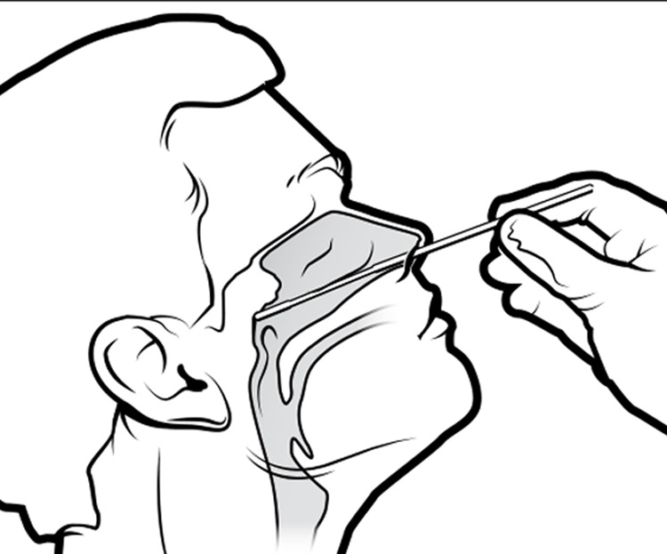

Bienvenidos
¡¡Laboratorios Moroleon te da la bienvenida!!
Somos un laboratiorio clínico que ofrece calidad e higiene a nuestros pacientes, cuyo objetivo es brindar la atención y rapidez en nuestros análisis quimicos, biológicos, inmunológicos, con el fin de cuidar la salud, de darle diagnósticos y resolucionarles los problemas a nuestros pacientes con la mejor ética posible. Además, te ofrecemos todos los estudios que necesites a los mejores precios de la región.
Nuestro personal que te ofrecen los servicios, son titulados de la Universidad Michoacana de San Nicolás de Hidalgo

Nuestra Misión
Consiste en ofrecer a la región la mejor calidad y precio posible a nuestros pacientes con la finalidad de proporcionar los análisis y pruebas con la atención merecida
Nuestra Visión
Ser un Laboratorio clínico preferible por los pacientes dentro de la región y del mercado de análisis clínicos, pruebas y otros diagnósticos y servicios que cambian la salud y mejora la calidad de vida de la región.
Nuestros Valores
Actitud
Dar el mejor servicio, atención, limpieza a nuestros pacientes con equipos de primera calidad.
Ética
Desempeño de nuestros servicios con ética profesional, honestidad, responsabilidad y respeto.
Lealtad a la empresa
Somos fieles y responsables a los principios, misiónes, visiones de la empresa.
Nuestros servicios y Estudios
Uroanálisis
Parasitología

Pruebas COVID-19 y PCR
Inmunología
Serología
Microbiología

Pruebas Especiales
Prueba Antidoping de 3 a 6 Elementos
Perfiles
Perfil Preoperatorio
Es un análisis clínico que analiza los valores básicos previos a una intervención quirúrgica. Para realizar este perfil es necesario una extracción de sangre.
Este perfil incluye: Hemograma (glóbulos rojos, blancos o leucocitos, hemoglobina y fórmula leucocitaria).
Es necesario para la prevención y detección de anemia e infecciones.
Glucosa (niveles de azúcar o glucemia en sangre). Necesario para la prevención y diagnóstico de la diabetes.
Creatinina (función renal). Valora el correcto funcionamiento del riñón.
Tiempo de Tromboplastina parcial activada. Para comprobar la coagulación de sangre.
Proteínas totales. Mide la cantidad total de las dos clases de proteínas: Albúmina (Ayuda a impedir que se escape el líquido fuera de los vasos anguíneos) y Globulina (Es importante en el sistema inmunitario).
Tener un ayuno mínimo de 9 horas, recolectar la primera orina de la mañana, no estar menstruando en caso de que el paciente sea mujer.
Perfil Prenatal
Son una serie de exámenes que se requieren para detectar enfermedades en el bebé, especialmente determinadas afecciones cormosómicas como el síndrome de Down (trisomía 21), y secuencias adicionales del cromosoma 18 (trisomía 18).
Este análisis usualmente se realiza entre la semana 11 y la semana 14 del embarazo.
Este perfil prenatal brinda la información no sólo del bebé, sino también de la madre. En estas pruebas se verifica y analiza el estado de salud de la madre, incluyendo problemas con su sangre, signos de afecciones y si la madre es o no inmune a la rubéola y a la varicela.
Se debe recolectar una muestra de sangre, suero y orina. Al realizar la muestra deberá tener un ayuno de 8 horas, se recomienda no hacer ejercicio 24 horas antes de la toma de la muestra EGO.
Perfil Reumático

Es un conjunto de análisis clínicos que ayudan al diagnóstico de enfermedades reumatológicas, que son las que afectan al aparato locomotor: Articulaciones,Músculos, tendones, ligamentos y tejido conectivo.
Incluye los siguientes análisis: Velocidad de sedimentación globular, factor reumatoide, proteína C reactiva y antiestreptolisinas.
Para realizar el Perfil Reumático se le solicita al paciente que tenga al menos un ayuno de 8 horas antes de que se le tome la muestra sanguínea.
Perfil de Lípidos
Se trata de un análisis que se hace con una muestra de sangre y que mide tanto el colesterol total como el de alta y baja densidad.
Este perfil nos ayuda a detectar: Riesgo de sufrir una enfermedad cardíaca y un accidente cardiovascular.
Se extrae una muestra de sangre que se extrae en el brazo.
La muestra es analizada para medir: Colesterol de alta densidad (HDL), colesterol bueno. Colesterol de baja densidad (LDL), colesterol malo, colesterol total y triglicéridos.
Este perfil siempre deberá hacerse cuando su médico lo indique. Cada cinco años en adultos sanos con el objetivo de monitoreo.
Una vez entre los 9 y 14 años y una más entre los 15 y 18 años.
Una vez al año cuando existan factores de riesgo como sobrepeso, obesidad, ser mayor de 50 años o más, tabaquismo, hipertensión, diabetes, enfermedad cardíaca o antecedentes familiares.
Perfil Hepático
Es un análisis de sangre diseñado específicamente para evaluar si el higado funciona correctamente y para el diagnóstico de enfermedades hepáticas, tener conocimiento si se ha visto afectado por otras patologías originadas en otras partes del organismo o controlar la función hepática en pacientes que siguen tratamientos con medicamentos que son hapatológicos.
Este estudio contiene:
Bilirrubinas totales
Transaminasa Oxalacética (TGO).
Transaminada Glutámico pirúvica (TGP).
Fosfatasa alcalina (ALP).
Gamma glutamil transpeptidasa (GGT).
Deshidrogenasa Láctica (DHL).
Proteínas totales (PT)
Globulina
Perfil Hormonal

Evalúa las hormonas sexuales que están implicadas en la reproducción. Este perfil hormonal se lleva a cabo para determinar si existen desequilibrios hormonales que puedan estar detrás de un problema de fertilidad.
Este perfil consiste en un análisis de sangre donde se analiza la concentración de diferentes hormonas. Puede hacerse un perfil hormonal femenino y masculino
En el caso de las mujeres, les ayuda a conocer el estado fértil, ver el momento del cilo, detectar premenopausia o transtornos menstruales ligados a testosterona y prolactina, problemas para lograr el embarazo, padecimientos de la glándula hipófisis o pituitaria (ubicada en la base del cerebro y encargada de regular numerosas funciones.)
Pueden existir diferencias en el estudio dependiendo del género del paciente.
Perfil Tiroideo
Conjunto de pruebas que se usa para diagnosticar el buen o mal funcionamiento de la tiroides. Ésta es una glándula que se localiza en el cuello justo bajo de la nuez y que se encarga de regular el metabolismo del cuerpo así como el crecimiento.
El perfil tiroideo incluye tres pruebas:
Hormona estimulante del tiroides (TSH).
Tiroxina libre (T4 Libre).
Triyodotironina total o libre (T3 total o libre).
El perfil tiroideo debe ser solicitada por un médico ante la sospecha de la existencia de un problema de tiroides.
Presencia de síntomas de hipertiroidismo y/o de hipotiroidismo
Detección de bultos o nódulos en la tiroides
Glándula tiroides agrandada o irregular.
Problemas para quedar embarazada
Es necesario tener una extracción de muestra de sangre del paciente.
TSH. Es una prueba que permite evaluar de forma general la función tiroidea. En ocaciones basta con ésta para un diagnóstico, si los resultados son anormales, entonces se solicita el perfil tiroideo completo.
Tiroxina libre o T4 libre. Mide la cantidad de la hormona tiroxina que se ha secretado por la glándula tiroides y se encuentra en el organismo de forma libre, es decir, sin estar unida a una proteína.
Triyodotironina total o T3 libre. Se usa para determinar la cantidad de otra de las hormonas tiroideas secretadas y que es crucial en el control corporal del metabolismo.
Perfil Renal
Son Exámenes para evaluar el funcionamiento de los riñones, ayuda a diagnosticar enfermedades renales y para monitorear de que manera están respondiendo al tratamiento.
Es una prueba de diagnóstico que mide la concentración de varias sustancias en sangre y orina para valorar la función renal
Se toma una pequeña muestra de sangre y una muestra de orina. Su médico dará instrucciones sobre si hay que acudir en ayunas o no.
Este perfil contiene:
Depuración de creatinina
Química sanguínea de 4 elementos
Biometría hepática
Proteínas totales (PT)
Examen General de Orina
Electrolitos de 3
Perfil Pancreático
Es un análisis clínico que permite diagnosticar y realizar el seguimiento de trastornos que afecten al páncreas.
Este perfil se realiza principalmente para diagnosticar o controlar enfermedades del páncreas e igualmente puede detectar algunos problemas del tubo digestivo.
Se realiza el perfil para descartar enfermedades de origen pancréatico, como la pancreatitis.
La pancreatitis es una inflamación del páncreas, ocurre cuando las enzimas digestivas comienzan a digerir el páncreas.
Este perfil se debe realizar en ayunas para tomar la muestra de sangre.
Pruebas
Prueba de Antígeno y Anticuerpos para Covid-19.
Evalúa los anticuerpos que se han producido para el COVID-19 en el organismo. Cuando hay presencia de SARS-CoV-2, el cuerpo produce un tipo de anticuerpos exclusivos para combartirlo.
Si se hace una prueba mediante hisopado, se busca el ARN del virus (Antígenos), y también se puede tratar de una prueba rápida; si es de sangre, se buscan anticuerpos que se han formado para combatir el virus (prueba serológica).
La prueba serológica, detectan IGA IGM IGG y determinan en qué momento de la enfermedad se encuentra el paciente y si ha desarrollado defensas, recordando que los anticuerpos comienzan a producirse a partir de los 12 o 14 días de la infección, no teniendo anticuerpos durante los primeros 7 a 10 días.
Inmunoglobulina A(igA): se encuentra en los recubrimientos de las vías respiratorias y del sistema digestivo, así como la saliva, lágrimas y leche materna.
Inmunoglobulina G(igG): es el tipo de anticuerpo que más abunda en el cuerpo humano. Éste se encuentra en la sangre y en otros fluidos, brinda protección contra las infecciones bacterianas y víricas. La igG puede tardar un tiempo en formarse después de una infección o vacunación.
Inmunoglobulina M (igM): Se encuentra principalmente en la sangre y en el líquido linfático; este es el primer anticuerpo que fabrica el cuerpo para combatir una nueva infección.
Tipos de Pruebas rápidas:
Hisopado: Aún cuando sea prueba rápida, se buscan antígenos (reconoce al virus).
Sangre:(serológico). Busca anticuerpos.
Prueba de VIH
Es una prueba que muestra si una persona se ha infectado con el VIH (el Virus de la inmunodeficiencia humana). Es un virus que ataca y destruye las células del sistema inmunitario.
Tres tipos de pruebas de VIH:
Prueba de anticuerpos: Trata de detectar anticuerpos contra el VIH en la sangre o saliva. El sistema inmunitario produce anticuerpos cuando una persona está expuesta a bacterias o virus como el VIH. La prueba de anticuerpos puede averiguar si una persona tiene el VIH de 3 a 12 semanas después de la infección. Esto se debe a que el sistema inmunitario puede tardar varias semanas o más, en producir anticuerpos contra el VIH.
Prueba de anticuerpos y antígenos contra el VIH. Esta prueba trata de detectar anticuerpos y antígenos contra el VIH en la sangre. Un antígeno es una parte de un virus, que desencadena una respuesta inmunitaria. Cuando una persona ha estado expuesta al VIH, los anticuerpos aparecen en la sangre antes de que el cuerpo produzca anticuerpos contra el VIH.
Esta prueba detecta el VIH de 2 a 6 semanas después de la infección.
Carga viral del VIH. Esta prueba mide el nivel de VIH en la sangre. Puede detectar el VIH más rápidamente que las pruebas de anticuerpos y antígenos. Si el VIH se detecta temprano, hay medicamentos para proteger el sistema inmunitario.
Prueba rápida en sangre. Mediante una punción digital y extracción de una gota de sangre. El resultado se obtiene según el tipo de test, en 1 minuto (de forma instantánea) o en 20 minutos.
Prueba rápida en fluido oral. Se recoge una pequeña muestra de fluido oral mediante una paleta. Esperar un mínimo de 20 minutos y leer el resultado.
Examen General de Orina (EGO)
Este examen incluye una serie de pruebas que sirven para detectar infecciones y enfermedades que modifican la composición de la orina. Para llevarlo a cabo, el paciente debe presentar una muestra de orina en un bote estéril con tapa rosca limpia, el cual se consigue en una farmacia o en el laboratorio donde se hará el examen.
El análisis de orina se utiliza para detectar y evaluar una amplia gama de trastornos, tales como Infección del tracto urinario, enfermedad renal y diabetes. Implica el examen de la apariencia, concentración y contenido de la orina. Los resultados del análisis de orina anormales pueden indicar una infección o una enfermedad.
La muestra es inspeccionada de forma visual para registrar el color y la apariencia física. Posteriormente es inspeccionada en un microscopio para buscar bacterias, gérmenes y otros.
El examen de orina también puede llamarse: EGO, Examen Rutinario de Orina, Urianálisis o Análisis de Orina.
Prueba Serológica para la sífilis (VDRL)
Es un examen para detectar sífilis. Mide sustancias (proteínas), llamadas anticuerpos, que su cuerpo puede producir si usted entra en contacto con la bacterias que causa la sífilis.
Es un análisis de sangre que tiene como objetivo diagnosticar y evaluar la respuesta al tratamiento para la sífilis, una infección de transmisión sexual también conocida como lúes. De esta forma, mediante la extracción de una muestra de sangre, para que sea procesada, es posible identificar la presencia de anticuerpos circulantes y su concentración, indicando la gravedad de la enfermedad.
Para llevar a cabo el examen no es necesario ayuno, y el resultado puede demorarse de 24 horas a 7 días.
Estudio Coprológico
Es un perfil en el que se incluyen diferentes técnicas de análisis (físicas, químicas y microscópicas), utilizadas para apreciar la capacidad digestiva del intestino y de gran utilidad para identificar procesos digestivos que cursan con diarrea por mala absorción o insuficiente digestión enzimática.
Consiste en el análisis cualitativo del contenido y características de las heces humanas. Generalmente se analiza el color, olor y forma de las evacuaciones, además se relizan pruebas de detección de sangre oculta en heces, presencia de comida no digerida, etc.
Exudado Faríngeo con Antibiograma
Es una prueba para detectar microbios (como bacterias o un hongo) que pueden causar una infección. Se añade una muestra de células de la parte posterior de su garganta a una sustancia que estimula la multiplicación de los microbios. Si no hay una multiplicación de microbios, el cultivo es negativo. Si hay una multiplicación de microbios que pueden causar una infección, el cultivo es positivo.
Identifica la causa de las infecciones en las vías respiratorias superiores. Sólo un médico puede identificar el origen de una infección de garganta vírico o bacteriano. Si se determina una infección por virus, lo hará por los síntomas que presenta el paciente. En cambio el médico determinará si se tratase de una infección bacteriana si el paciente presenta dolor, inflamación y secreción de pus en la garganta.
Pruebas de sensibilidad (antibiograma)
Las pruebas de sensibilidad o antibiogramas determinan la susceptibilidad de un microorganismo frente a los medicamentos antimicrobianos, a partir de la exposición de una concentración estandarizada del germen a estos fármacos. Las pruebas de sensibilidad pueden hacerse para bacterias, hongos o virus. Para algunos microorgamismos, los resultados obtenidos con un fármaco permiten predecir los resultados que se obtendrán con fármacos similares.
Electrolitos de 3 a 5 Elementos
Los electrolitos son minerales presentes en la sangre y otros líquidos corporales que llevan una carga eléctrica. Los electrolitos afectan la cantidad de agua en el cuerpo, la acidez de la sangre (PH), la actividad muscular y otros procesos importantes. Perdemos electrolitos cuando sudamos, debemos reponerlos tomando líquidos.
Esta prueba de electrolitos incluye: Sodio, Potasio y Cloro, Calcio, Fósforo y Magnesio. Esta prueba ayuda a detectar deficiencias de éstos, para evaluar la función renal, para evaluar trastornos metabólicos tales como acidosis o alcalosis, entre otros.
El paciente debe tener un ayuno de 8 horas. Se recomienda no hacer ejercicio 24 horas antes de la toma de muestra. Evitar consumir bebidas alcohólicas 24 horas antes de la toma de muestra. El paciente deberá suspender medicamentos 24 horas antes de la toma de muestra.
Interferencias para el estudio: Consumo de bebidas alcohólicas, realizar ejercicio.
Prueba de embarazo
Es una prueba que mide una hormona en el cuerpo llamada gonadotropina coriónica humana (GCH), producida durante el embarazo. Esta hormona aparece en la sangre y en la orina de las mujeres embarazadas incluso ya a los 10 días después de la concepción.
Existen 2 tipos de exámenes de sangre: Cualitativo; el cual mide si la hormona GCH está o no presente. Cuantitativo, el cual mide cuánta hormona GCH está presente.
La prueba de la gonadotropina coriónica humana (GCH) en orina casi siempre se lleva a cabo mediante la aplicación de una gota de orina en una banda o tira química preparada. Para la prueba de sangre, se extrae sangre en un tubo con una aguja y una jeringa.
Resultados normales
Los niveles de GCH aumentan en forma rápida durante el primer trimestre del embarazo y luego disminuyen ligeramente.
Resultados Anormales
El nivel de GCH debe casi duplicarse cada 48 horas al comienzo de un embarazo. El nivel de GCH que no se eleva apropiadamente puede ser indicio de un problema con su embarazo. Un nivel extremadamente alto de GCH puede sugerir la presencia de un embarazo molar o de más de un feto, por ejemplo, gemelos.
Las pruebas de embarazo en orina solo serán positivas cuando usted tenga suficiente GCH en la sangre. La mayoría de las pruebas de embarazo de venta libre no le dirá que está embarazada hasta que se retrase su ciclo menstrual. Hacer una prueba antes de este momento a menudo da un resultado inexacto. El nivel de GCH es más alto si su orina es más concentrada. Un buen momento para hacerse la prueba es apenas se levante en la mañana.
Biometría Hemática
Sirve para analizar los componentes de la sangre, con el fin de detectar enfermedades y trastornos sanguíneos, que en su mayoría no presentan síntomas en las personas.
En la biometría hemáticas se analizan los componentes de la sangre como glóbulos rojos, glóbulos blancos, plaquetas, hemoglobina y hematrocitos. Una biometría hemática puede detectar:
Anemia. Falta de hematíes.
Leucemia. Producción excesiva de leucocitos anormales.
Trombocitopenia. Niveles bajos en el número de plaquetas.
Enfermedad cardiaca.
Cuando los glóbulos blancos están bajos, podría deberse a:
Trastornos inmunitarios.
Trastornos de médula ósea.
Cáncer
Si los glóbulos blancos están altos, podría deberse a:
Infección
Reacción a algunos medicamentos.
La realización de la biometría hemática consiste en la extracción de una muestra sanguínea.
Promociones
Gran promoción Pruebas COVID-19
Prueba rápida de COVID-19 nasofaríngea a tan sólo $499 MXN con entrega inmediata y, si vas a viajar en vuelos nacionales o internacionales es confiable y segura.
Sucursales Laboratorios
Sucursal Calle America #9, zona centro, 38800, Moroleón, GTO.

Sucursal Salvador Lopez Moreno #528, Zona centro, Planta Alta, 38800, Moroléon, GTO.
Contacto y Horario
Responsable Sanitario
UMSNH
Q.F.B. Carlos Alberto Colín Sanchez
CED. PROF. 12116661

Hacer clic en el Número de Whatsapp
Número de Whatsapp: 445-194-5127Horario
Lunes
08:00 A.M. - 04:00 P.M.
Martes
08:00 A.M. - 04:00 P.M.
Laboratorio Moroleon

Hacer clic en el logo de Facebook.
Miércoles
08:00 A.M. - 04:00 P.M.
Jueves
08:00 A.M. - 04:00 P.M.
Viernes
08:00 A.M. - 04:00 P.M.
Sábado
08:00 A.M. - 02:00 P.M.